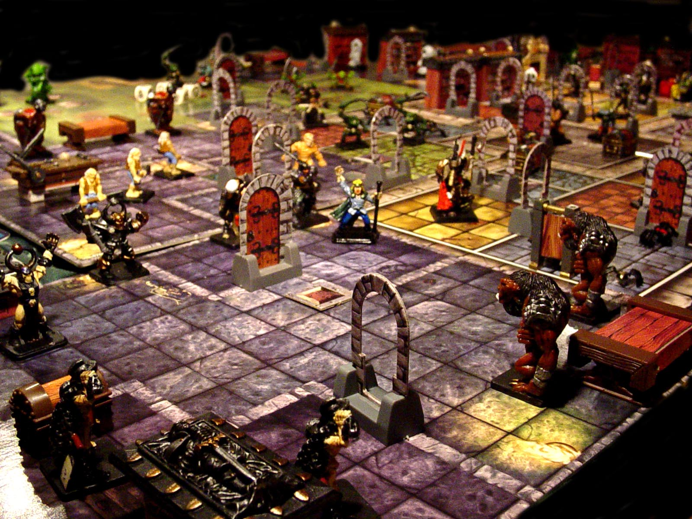

|
Лор D&D  Нравится вам это или нет, но лучший способ найти группу для игры, вам нужно самому полностью погрузиться в игру. Хотя это может быть не для всех, освоение подземелий — действительно полезное хобби. Конечно, оно принесет вам немало разочарований. Однако, если вы будете придерживаться этого правила, мы обещаем, что обучение Мастеру подземелий — это лучший способ вывести вашу любовь к игре на новый уровень. Нет лучшего способа поделиться своей страстью, чем стать одним из ее управляющих, надеюсь, вдохновив других полюбить Dungeons & Драконы так же, как и вы в процессе. |